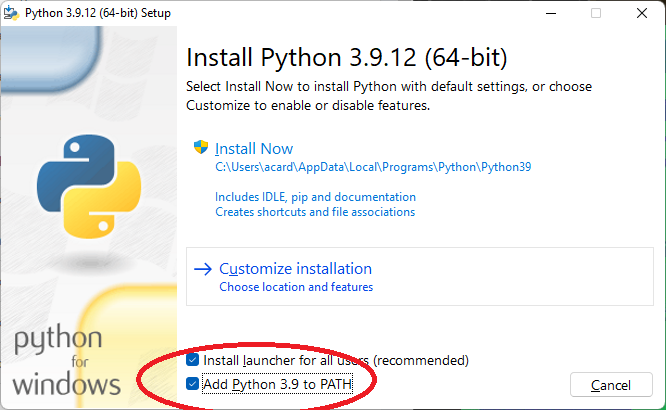
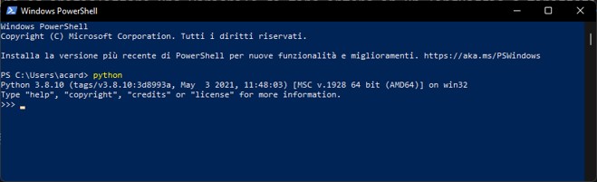
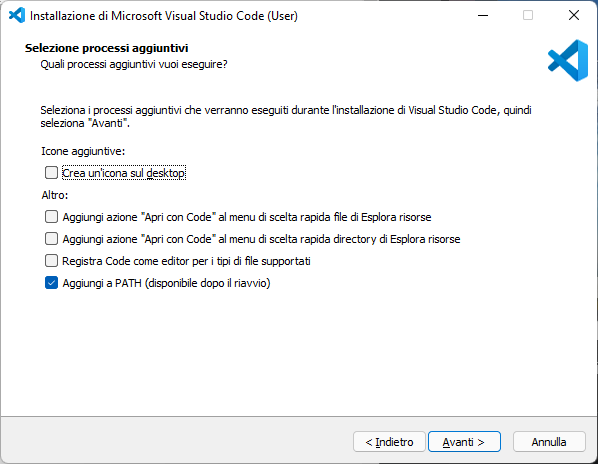

Appendice A - Configurazione dell'ambiente di sviluppo Python¶
Versione video
Una versione video di questa procedura di installazione è disponibile a questo indirizzo
Installazione di Python¶
- Andare al seguente indirizzo, e selezionare la versione adatta al proprio sistema operativo.
- Iniziare la procedura di installazione (ad esempio, in Windows, cliccando sull'eseguibile appena scaricato). E' fortemente consigliato aggiungere Python al proprio PATH spuntando l'opportuna casella durante l'installazione, come mostrato in figura 1.

- Una volta completata la procedura di installazione, aprire uno shell (ad esempio, il prompt dei comandi), e digitare
python. Se tutto è andato per il verso giusto, apparirà una schermata simile a quella mostrata in figura 2.

Installazione di Visual Studio Code¶
- Andare al seguente indirizzo, e selezionare la versione adatta al proprio sistema operativo.
- Seguire la procedura di installazione mostrata a schermo. E' anche in questo caso consigliata l'aggiunta di Visual Studio Code al path, come mostrato in figura 3.

Setup di TensorFlow¶
In questa sezione, vedremo come effettuare il setup di TensorFlow su tre diversi sistemi operativi, ovvero Windows, Linux e MacOS.
TensorFlow e Windows
A partire dalla versione 2.11, TensorFlow non è più supportato su Windows. Di conseguenza, è necessario seguire una procedura differente, dettagliata in questa guida.
1. Requisiti di sistema¶
I requisiti necessari sono:
- Windows 10 aggiornato almeno alla versione 21H2;
- Windows Subsystem on Linux (WSL2), reperibile da qui.
2. (Opzionale) Setup della GPU NVIDIA in WSL¶
Qualora si disponga di una GPU NVIDIA, si potrà effettuare il setup della stessa su WSL2.
Supponendo di aver installato Ubuntu sul WSL2, dovremo per prima cosa entrare nel sottosistema Linux scrivendo da terminale l'istruzione:
Una volta dentro, dovremo eseguire le seguenti istruzioni da riga di comando:
sudo apt-key del 7fa2af80
wget https://developer.download.nvidia.com/compute/cuda/repos/wsl-ubuntu/x86_64/cuda-wsl-ubuntu.pin
sudo mv cuda-wsl-ubuntu.pin /etc/apt/preferences.d/cuda-repository-pin-600
wget https://developer.download.nvidia.com/compute/cuda/12.0.0/local_installers/cuda-repo-wsl-ubuntu-12-0-local_12.0.0-1_amd64.deb
sudo dpkg -i cuda-repo-wsl-ubuntu-12-0-local_12.0.0-1_amd64.deb
sudo cp /var/cuda-repo-wsl-ubuntu-12-0-local/cuda-*-keyring.gpg /usr/share/keyrings/
sudo apt-get update
sudo apt-get -y install cuda
Per maggior informazioni, potete consultare la guida completa disponibile a questo indirizzo.
3. Installazione di Miniconda¶
A partire dalla versione 2.11, il metodo raccomandato per l'utilizzo di TensorFlow è quello di utilizzare Miniconda, creando un ambiente virtuale separato all'interno del quale andare ad installare tutte le dipendenze necessarie.
Da terminale, scriviamo:
curl https://repo.anaconda.com/miniconda Miniconda3-latest-Linux-x86_64.sh -o Miniconda3-latest-Linux-x86_64.sh
bash Miniconda3-latest-Linux-x86_64.sh
Durante l'installazione, rispondiamo sempre yes alle domande che ci verranno fatte, premendo successivamente Invio.
4. Creazione di un ambiente virtuale¶
Una volta terminata l'installazione, riavviamo il sottosistema Linux (per farlo, scriviamo exit e, una volta usciti, wsl). A questo punto potremo creare un nuovo ambiente virtuale basato su Python 3.9 che chiameremo pcs:
Possiamo quindi attivare questo ambiente virtuale scrivendo:
5. (Opzionale) Setup della GPU¶
Questo step ci permette di configurare ed utilizzare la GPU nell'ambiente virtuale del nostro sistema Linux. Per prima cosa, verifichiamo che i driver siano installati usando la seguente istruzione:
Qualora non siano installati, occorrerà farlo prelevandoli dal sito ufficiale.
Configuriamo il PATH del sistema:
mkdir -p $CONDA_PREFIX/etc/conda/activate.d
echo 'export LD_LIBRARY_PATH=$LD_LIBRARY_PATH:$CONDA_PREFIX/lib/' > $CONDA_PREFIX/etc/conda/activate.d/env_vars.sh
6. Installazione di TensorFlow¶
Installiamo TensorFlow usando un package manager a nostra scelta (ad esempio, pip):
Verifichiamo l'installazione per la CPU:
e per la GPU:
1. Requisiti di sistema¶
I requisiti necessari sono:
- Ubuntu aggiornato almeno alla versione 16.04.
2. Installazione di Miniconda¶
A partire dalla versione 2.11, il metodo raccomandato per l'utilizzo di TensorFlow è quello di utilizzare Miniconda, creando un ambiente virtuale separato all'interno del quale andare ad installare tutte le dipendenze necessarie.
Da terminale, scriviamo:
curl https://repo.anaconda.com/miniconda Miniconda3-latest-Linux-x86_64.sh -o Miniconda3-latest-Linux-x86_64.sh
bash Miniconda3-latest-Linux-x86_64.sh
Durante l'installazione, rispondiamo sempre yes alle domande che ci verranno fatte, premendo successivamente Invio.
3. Creazione di un ambiente virtuale¶
Una volta terminata l'installazione, riavviamo il sottosistema Linux (per farlo, scriviamo exit e, una volta usciti, wsl). A questo punto potremo creare un nuovo ambiente virtuale basato su Python 3.9 che chiameremo pcs:
Possiamo quindi attivare questo ambiente virtuale scrivendo:
4. (Opzionale) Setup della GPU¶
Questo step ci permette di configurare ed utilizzare la GPU nell'ambiente virtuale del nostro sistema Linux. Per prima cosa, verifichiamo che i driver siano installati usando la seguente istruzione:
Qualora non siano installati, occorrerà farlo prelevandoli dal sito ufficiale.
Configuriamo il PATH del sistema:
mkdir -p $CONDA_PREFIX/etc/conda/activate.d
echo 'export LD_LIBRARY_PATH=$LD_LIBRARY_PATH:$CONDA_PREFIX/lib/' > $CONDA_PREFIX/etc/conda/activate.d/env_vars.sh
5. Installazione di TensorFlow¶
Installiamo TensorFlow usando un package manager a nostra scelta (ad esempio, pip):
Verifichiamo l'installazione per la CPU:
e per la GPU:
Errori in Ubuntu 22.04¶
Nel caso si utilizzi la versione 22.04 di Ubuntu, potremmo trovarci di fronte al seguente errore:
Can't find libdevice directory ${CUDA_DIR}/nvvm/libdevice.
...
Couldn't invoke ptxas --version
...
InternalError: libdevice not found at ./libdevice.10.bc [Op:__some_op]
Per risolverlo, eseguiamo le seguenti istruzioni:
conda install -c nvidia cuda-nvcc=11.3.58
mkdir -p $CONDA_PREFIX/etc/conda/activate.d
printf 'export LD_LIBRARY_PATH=$LD_LIBRARY_PATH:$CONDA_PREFIX/lib/\nexport XLA_FLAGS=--xla_gpu_cuda_data_dir=$CONDA_PREFIX/lib/\n' > $CONDA_PREFIX/etc/conda/activate.d/env_vars.sh
source $CONDA_PREFIX/etc/conda/activate.d/env_vars.sh
mkdir -p $CONDA_PREFIX/lib/nvvm/libdevice
cp $CONDA_PREFIX/lib/libdevice.10.bc $CONDA_PREFIX/lib/nvvm/libdevice/
1. Requisiti di sistema¶
I requisiti necessari sono:
- macOS aggiornato almeno alla versione 10.12.6 (Sierra).
2. Verifica della versione di Python installata¶
Verifichiamo che sia installato Python dalla versione 3.7 alla 3.10:
e pip nella versione superiore alla 20.3:
2. Installazione di Miniconda¶
A partire dalla versione 2.11, il metodo raccomandato per l'utilizzo di TensorFlow è quello di utilizzare Miniconda, creando un ambiente virtuale separato all'interno del quale andare ad installare tutte le dipendenze necessarie.
Da terminale, scriviamo:
curl https://repo.anaconda.com/miniconda Miniconda3-latest-Linux-x86_64.sh -o Miniconda3-latest-Linux-x86_64.sh
bash Miniconda3-latest-Linux-x86_64.sh
Durante l'installazione, rispondiamo sempre yes alle domande che ci verranno fatte, premendo successivamente Invio.
3. Creazione di un ambiente virtuale¶
Una volta terminata l'installazione, riavviamo il sottosistema Linux (per farlo, scriviamo exit e, una volta usciti, wsl). A questo punto potremo creare un nuovo ambiente virtuale basato su Python 3.9 che chiameremo pcs:
Possiamo quindi attivare questo ambiente virtuale scrivendo:
4. Installazione di TensorFlow¶
Installiamo TensorFlow usando un package manager a nostra scelta (ad esempio, pip):
Verifichiamo l'installazione: